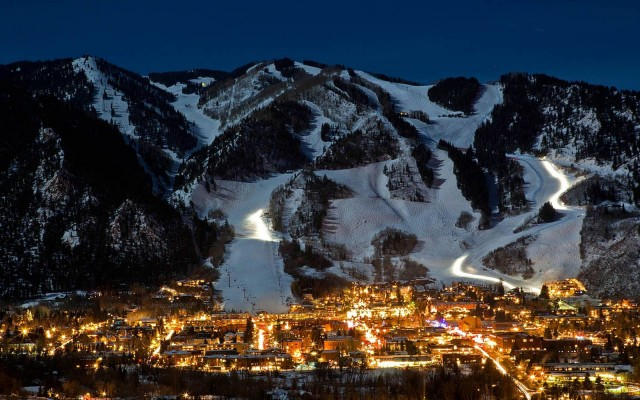
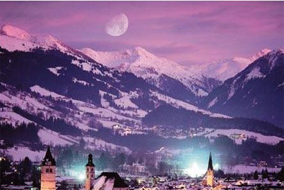
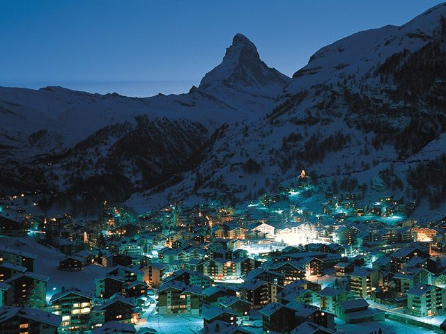
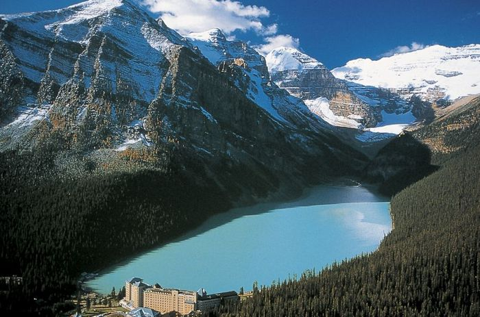
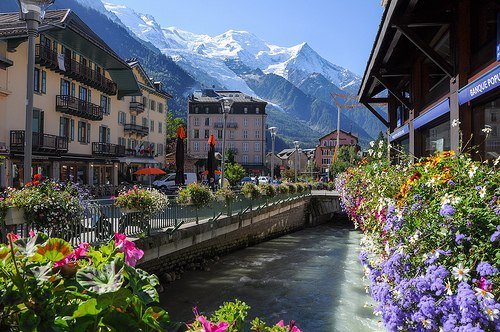
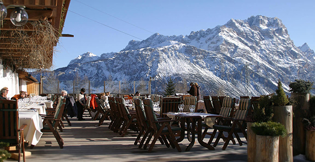

Горы всегда поражали человека своим величием, труднодоступностью и непредсказуемостью. С их склонов люди любовались живописными долинами и ущельями, шумными водопадами и бурными реками. Восхищаясь красотой белоснежных вершин, люди совершали восхождения, устанавливали на горных пиках флаги - и, окидывая взглядом открывающуюся перспективу, ставили еще более сложные, труднодостижимые цели. Пожалуй, среди всех видов туризма только горный туризм рождает такое же сильное чувство, как любовь, и если оно возникает, то захватывает раз и навсегда, потому что равнодушные не идут в горы, они остаются на равнине…
Хотите приобщиться к избранному кругу богатых и знаменитых, тогда один из самых дорогих американских горнолыжных курортов Аспен к вашим услугам. Расположенный в Колорадо, город известен, прежде всего, склонами четырех, никак не связанных друг с другом, гор, позволяющих лыжникам с разным уровнем подготовки наслаждаться катанием и местными природными красотами. Как новички, так и профессионалы смогут здесь найти отдых по своему вкусу. Единственный минус (а для кого-то может быть и плюс) — крайне высокая цена за все виды услуг.
Китцбюэль — один из известнейших центров зимнего спорта в Альпах, одно из тех мест, что является синонимом слов «катание на лыжах». Кандидат на проведение Зимней Олимпиады 2006, ежегодно Китцбюэль привлекает туристов более чем из сорока стран мира. Знаменитая трасса мировых чемпионатов по слалому Streif и «райский сад» сноубордистов на Китцбюэлер Хорн создали этому городу репутацию самого популярного и любимого горнолыжного курорта Тироля. Но для многих зимний Китцбюэль был и остается очаровательной фантастической снежной сказкой, которая начинается с яркого исторического центра и в которой отражается вечно праздничная атмосфера самого красивого города Тироля.
Церматт — превосходный горнолыжный курорт в Швейцарии. Эта деревня находится в тихом и миролюбивом уголке кантона Вале, в непосредственной близости от одной из величайших природных достопримечательностей горы Маттерхорн. Вы не найдете на территории Церматта машин. Второй по величине в мире перепад высот и затяжные снегопады — характерные черты.
Ледниковое озеро Луиз расположено в самом сердце Национального парка Банф в Канаде. Первоначально оно получило название Измрудное, из-за цвета воды, но впоследствии его переименовали в честь дочери королевы Виктории. Именно берега Луиз облюбовал один из самых живописных горнолыжных курортов в Северной Америке, если не во всем мире. Здесь есть три зоны для катания — гора Норкау, деревня Саншайн и озеро Луиз.
Шамони — место проведения первых зимних Олимпийских игр в 1924 году. Сегодня популярный горнолыжный курорт претендует на звание одной из самых известных в мире зон для катания, и пока это ему хорошо удается. Шамони расположен у подножия горы Монблан, высочайшей горы в Альпах, на границе Италии и Франции, и второй по величине в Европе.
Кортина — итальянский горнолыжный курорт в Доломитовых Альпах, с богатой спортивной историей и аристократическим духом. Именно здесь проводились зимние Олимпийские игры 1956 года, всевозможные чемпионаты и другие состязания. Сегодня горнолыжные трассы Кортина — важный этап в Кубке мира и достойный соперник другим курортам. Подобно швейцарскому Церматту, вся жизнь города сосредоточена вокруг маленьких, но чрезвычайно симпатичных улочек.